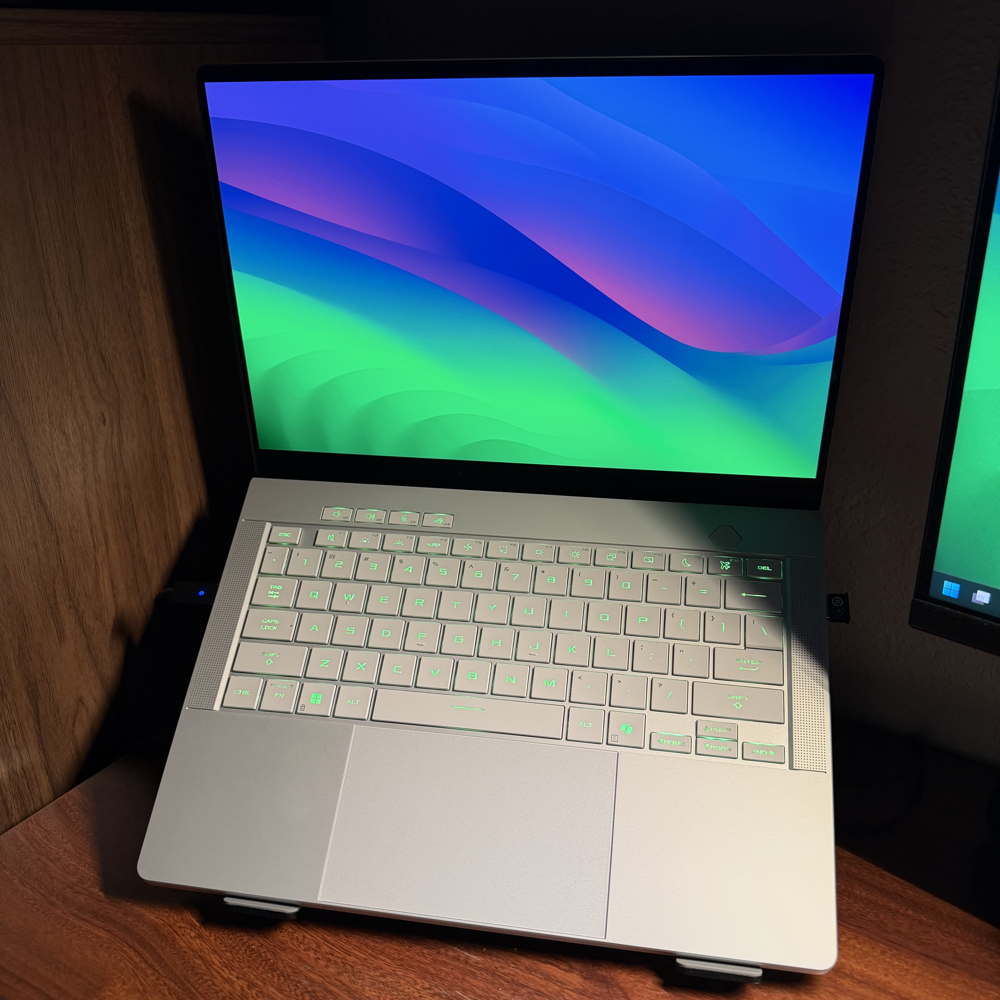
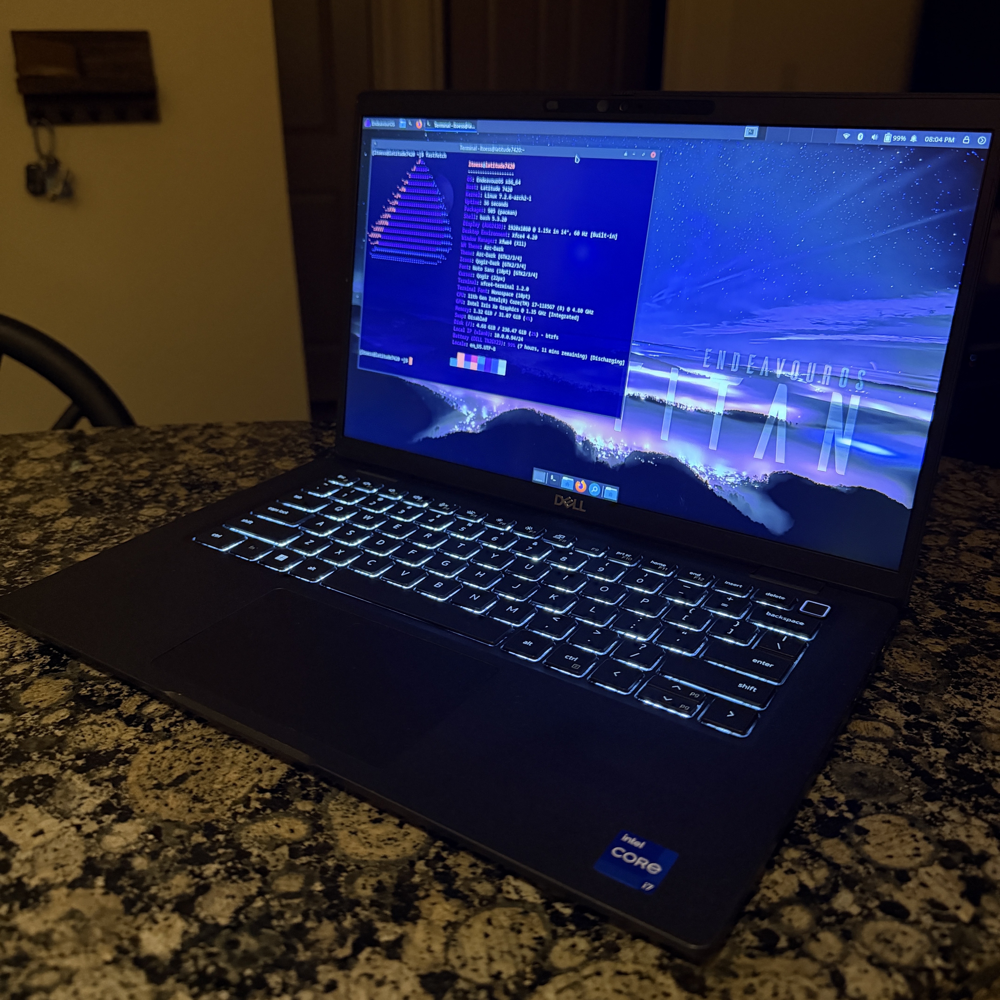

computers
- asus rog zephyrus G14 GA403WW
- this has been my main gaming machine since november 2025 - definitely the best laptop i've ever owned. 3k 120hz oled display, 7+ hours of battery life, rtx 5080, 14", full aluminum build, what else could you want?
- the downside of all the power is linux incompatibility. on windows, you can disable the 5080 and switch to the integrated gpu to improve battery life. i've tried multiple distros, and i keep getting problems trying to switch gpu modes. sticking to windows for now. can't even play fortnite on linux.
- dell latitude 7420
- bought this thing in may '26 to have a linux playground. i'm fond of arch-based distros, and i'm fully behind ditching windows telemetry. currently i run endeavorOS with XFCE, and it is great. it has just enough creature comforts, yet it still feels raw and performance oriented.
- esp32 (lol)
- i got my esp32 from a group project i did in my systems organization class. a while back i vibe coded an airline tracker onto it, the tracker would display planes over 5000 feet in a desired zip-code radius. some day i'll get around to actually making something with it.
peripherals
- lemokey p1 he
- average recent 75% prebuilt mechanical keyboard with a knob slop.
- jokes aside, this is a great-feeling prebuilt keyboard. it comes with linear hall-effect switches, very smooth.
- logitech mx master 4
- what else is there to say, it's an mx master mouse. awesome professional mouse.
- hyperx pulsefire haste wireless gen 1 (gaming mouse that gets the job done)

the g14 ^

the dell ^